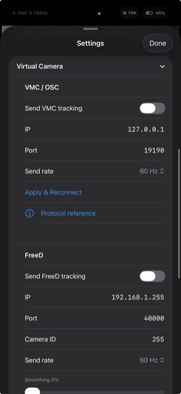

Warudo is the most common destination for VTOKU Cam. Install the VTOKU Cam Warudo plugin, then the phone sends its camera to the plugin over OSC and FreeD. Warudo can also send avatar bone and blendshape data back to the phone over VMC so your VRM moves in AR.
Workshop plugin
The VTOKU Cam Workshop plugin adds VTOKU Cam nodes and assets to Warudo for a tighter setup.
Also available on GitHub.
- Download
VTokuCam.warudoabove. - Drop the file into Warudo's plugins folder:
Warudo_Data/StreamingAssets/Plugins(inside Warudo's install directory). - Restart Warudo. The VTOKU Cam plugin loads automatically.
Can't find the folder? In Warudo, open
Settings → About → Open Data Folder, then go into
StreamingAssets/Plugins (create the Plugins folder if it isn't there).
Before you start
- Phone and computer on the same local network.
- You know your computer's local IP address (e.g.
192.168.1.20). - Warudo is running with a character loaded.
1. Send your camera to Warudo

- In Warudo, add the VTOKU Camera asset from the plugin (installed above), and bind it to your scene's camera.
- In VTOKU Cam, open Senders and enable VMC/OSC and/or FreeD, then set the destination IP to your computer.
- Match the ports between the app and the VTOKU Camera asset (VTOKU Cam defaults: OSC
19190, FreeD40000). - The asset applies the camera transform and FOV to your Warudo camera, phase-locked to the ARKit frame.
Use the VTOKU Camera asset, not Warudo's VMC Receiver. Warudo's built-in VMC Receiver doesn't understand the camera format. The VTOKU Camera asset reads the camera over OSC and FreeD instead.
2. Drive the avatar from Warudo (optional)
To have Warudo animate the VRM shown on the phone, send VMC back to the device. (Any VMC app can do this, not just Warudo. See Drive the avatar over VMC.)
- In Warudo, add a VMC Sender targeting the phone's IP on port
39539. - VTOKU Cam receives bones and blendshapes and applies them to your avatar. While a Warudo VMC feed is live, it overrides on-device ARKit face capture by design.
3. Audio (optional)
VTOKU Cam can receive Warudo audio so the avatar's voice plays in sync on the phone. This uses a separate UDP path and self-corrects timing over long sessions.
Connecting across networks (VPN or Tailscale)
The phone and computer don't have to be on the same Wi-Fi. If they're on different networks, or you want to stream from somewhere else entirely, put them on the same virtual network first, then use the address that network assigns.
- Tailscale (easiest): install it on both the phone and the computer and sign in
to the same account. Use each device's Tailscale IP (the
100.x.x.xaddress) as the destination instead of the local IP. Everything else stays the same. - A VPN that puts both devices on one subnet (a home VPN, WireGuard, or similar) works the same way: connect both ends, then use the VPN-assigned address.
Heads up: over a VPN or Tailscale, use the device's
virtual-network IP, not its 192.168.x.x LAN address. Broadcast and auto-discovery
don't cross these networks, so enter the IP manually. Higher latency is normal off the local
network; the manual Motion-delay trim helps.
Troubleshooting
- Nothing arrives in Warudo: re-check IP/port, confirm both devices are on the same subnet, and that Local Network permission is granted on the phone.
- Avatar doesn't move: confirm Warudo's VMC Sender targets the phone and that the phone isn't on a guest network with client isolation.
- Pose drifts: re-anchor by tapping a fresh floor point; keep good lighting for ARKit tracking.